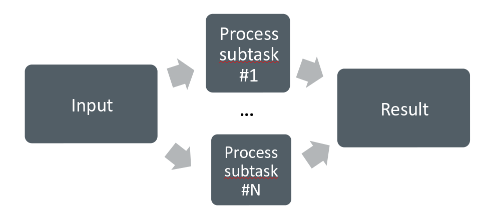

Introduction to GPU¶
Moore’s law¶
The number of transistors in a dense integrated circuit doubles about every two years. More transistors means smaller size of a single element, so higher core frequency can be achieved. However, power consumption scales as frequency in third power, so the growth in the core frequency has slowed down significantly. Higher performance of a single node has to rely on its more complicated structure and still can be achieved with SIMD, branch prediction, etc.

The evolution of microprocessors. The number of transistors per chip increase every 2 years or so. However it can no longer be explored by the core frequency due to power consumption limits. Before 2000, the increase in the single core clock frequency was the major source of the increase in the performance. Mid 2000 mark a transition towards multi-core processors.¶
Achieving performance has been based on two main strategies over the years:
Increase the single processor performance:
More recently, increase the number of physical cores.
Graphics processing units¶
The Graphics processing units (GPU) have been the most common accelerators during the last few years, the term GPU sometimes is used interchangeably with the term accelerator. GPUs were initially developed for highly-parallel task of graphic processing. Over the years, were used more and more in HPC. GPUs are a specialized parallel hardware for floating point operations. GPUs are co-processors for traditional CPUs: CPU still controls the work flow, delegating highly-parallel tasks to the GPU. Based on highly parallel architectures, which allows to take advantage of the increasing number of transistors.
Using GPUs allows one to achieve very high performance per node. As a result, the single GPU-equipped workstation can outperform small CPU-based cluster for some type of computational tasks. The drawback is: usually major rewrites of programs is required.

A comparison of the CPU and GPU architecture. CPU (left) has complex core structure and pack several cores on a single chip. GPU cores are very simple in comparison, they also share data and control between each other. This allows to pack more cores on a single chip, thus achieving very hich compute density.¶
Accelerator performance growth¶
A growth in accelerator performance over the years in comparison to Intel CPU performance.¶
One of the most important features that allows the accelerators to reach this high performance is their scalability. Computational cores on accelerators are usually grouped into multiprocessors. The multiprocessors share the data and locical elements. This allows for better scaling: more multiprocessors means more raw performance and this is very easy to achieve with more transistors available.
Accelerator model today¶
Accelerators are a separate main circuit board with the processor, memory, power management, etc. It is connected to the motherboard with CPUs via PCIe bus. Having its own memory means that the data has to be copied to and from it. CPU acts as a main processor, controlling the execution workflow. It copies the data from its own memory to the GPU memory, executes the program and copies the results back. GPUs runs tens of thousands of threads simultaneously on thousands of cores and does not do much of the data management. With many cores trying to access the memory simultaneously and with little cache available, the accelerator can run out of memory very quickly. This makes the data management and its access pattern is essential on the GPU. Accelerators like to be overloaded with the number of threads, because they can switch between threads very quickly. This allows to hide the memory operations: while some threads wait, others can compute.
GPU architecture: NVIDIA Volta¶
A scheme of NVIDIA Volta GPU.¶
NVIDIA Volta streaming multiprocessor (SM):
64 single precision cores
32 double precision cores
64 integer cores
8 Tensore cores
128 KB memory block for L1 and shared memory
0 - 96 KB can be set to user managed shared memory
The rest is L1
65536 registers - enables the GPU to run a very large number of threads

A scheme of NVIDIA Volta streaming multiprocessor.¶
Challenges in using Accelerators¶
Applicability: Is your algorithm suitable for GPU?
Programmability: Is the programming effort acceptable?
Portability: Rapidly evolving ecosystem and incompatibilities between vendors.
Availability: Can you access a (large scale) system with GPUs?
Scalability: Can you scale the GPU software efficiently to several nodes?
Using GPUs¶
From less to more difficult:
Use existing GPU applications
Use accelerated libraries
Directive based methods
OpenMP
OpenACC
Use lower level language
CUDA
HIP
OpenCL
SYCL
Compute tasks¶
Serial computing:
Single processing unit (“core”) is used for solving a problem. Example: Fibonacci numbers.

Parallel computing
A problem is split into smaller subtasks. Multiple subtasks are processed simultaneously using multiple cores. Good examples: molecular dynamics, computational fluid dynamics.

Exposing parallelism¶
Data parallelism
Data is distributed to processor cores.
Each core performs simultaneously (nearly) identical operations with different data.
Especially good on GPUs.
Task parallelism
Different cores perform different operations with (the same or) different data
These can be combined

Do not forget to use the CPU. GPU and CPU tasks can run simultaneously.
Algorithmic improvements should always be considered.
Amdahl’s law¶
Parallel programs often contain sequential parts. Amdahl’s law gives the maximum speed-up in the presence of non-parallelizable parts. It is the main reason for limited scaling. The maximum speed-up is
where \(F\) is the parallel fraction and \(N\) is the number of cores

Parallel computing concepts¶
Load balance
Distribution of workload to different cores.
Parallel overhead
Additional operations which are not present in serial calculation.
Synchronization, redundant computations, communications.
Summary¶
GPUs are highly parallel devices that can execute certain parts of the progrem in many parallel threads.
In order to use the GPU efficiency, one has to split their task in many subtasks that can run simulteneously.
Language extensions, such as CUDA, HIP, can give more performance, but harder to use.
Directive based methods are easy to implement, but can not leverage all the GPU capabilities.